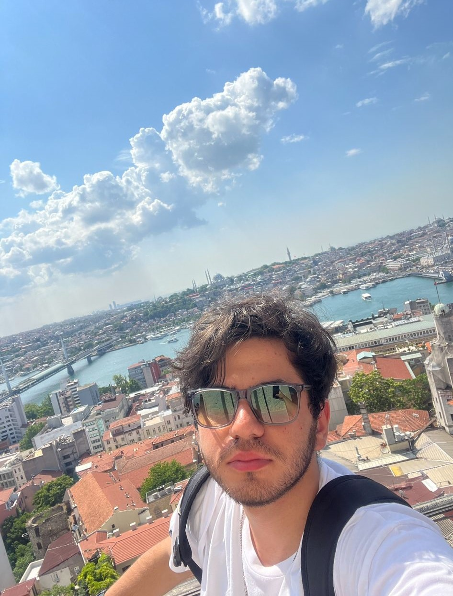

Hakkımda
2004'te İstanbul'un Güngören ilçesinde doğdum. Her ne kadar
İstanbul'da doğsamda hayatımın neredeyse tamamı Iğdır'da
geçti. İlkokul maceram İnönü İlköğretim okulu ile başladı. Or-
taokulu da aynı yerde okuduktan sonra lise sınavında iyi deni-
lebilecek bir puan ile Haydar Aliyev Fen Lisesini kazandım. Ma-
alesef lise hayatımın büyük bir bölümü pandemi süreciyle geçti.
İttirmeli kaktırmalı 4 senelik lise hayatımdan sonra 1 senelik me-
zunluk serüvenimden sonra Bandırma Onyedi Eylül Üniversite-
sin'de Yazılım Mühendisliği bölümü kazandım. Bu bölümde ken-
dimi geliştirip güzel işlere imza atmayı düşünüyorum.
